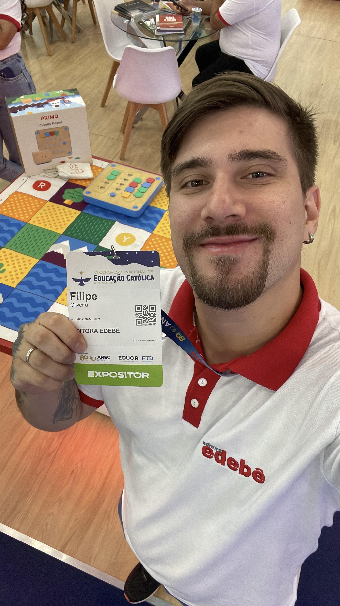

Sobre o Gasto Certo!
O Gasto Certo é uma aplicação web desenvolvida com o objetivo principal de simplificar e otimizar o
controle financeiro pessoal.
A ideia para este projeto nasceu da própria experiência de seu criador,
Filipe Fernandes, que em 2025 decidiu migrar para o vibrante mundo da Tecnologia da Informação.
Como projeto final do primeiro semestre da faculdade UDF, na disciplina de Desenvolvimento Web, Filipe uniu seus novos conhecimentos em HTML5, CSS3 e JavaScript a uma necessidade pessoal antiga: a organização das finanças. "Bati muita cabeça com o controle de gastos na vida real", comenta Filipe. "Percebi que muitos enfrentam o mesmo desafio. Desenvolver o Gasto Certo foi uma oportunidade perfeita para aplicar o que aprendi e criar uma solução prática para algo que sempre me gerou dor de cabeça."
Esta aplicação representa não apenas a consolidação dos conhecimentos adquiridos no início de sua jornada em TI, mas também a materialização do desejo de transformar desafios pessoais em ferramentas úteis para a comunidade. O Gasto Certo foi pensado para ser intuitivo, eficiente e, acima de tudo, um aliado no caminho para uma vida financeira mais organizada e tranquila.
